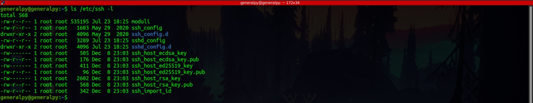
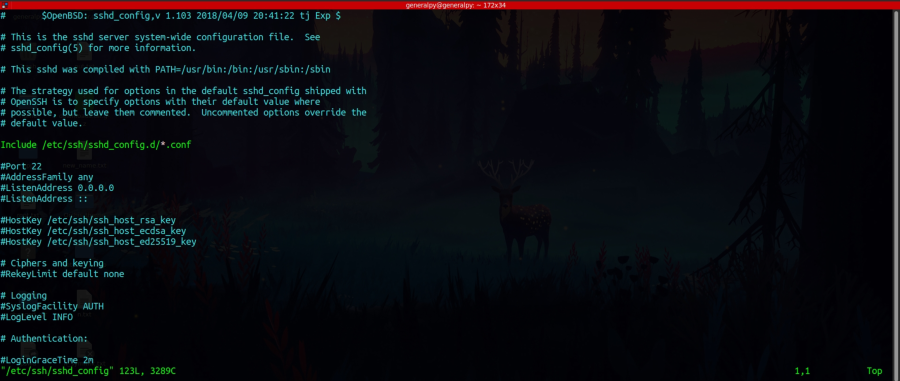
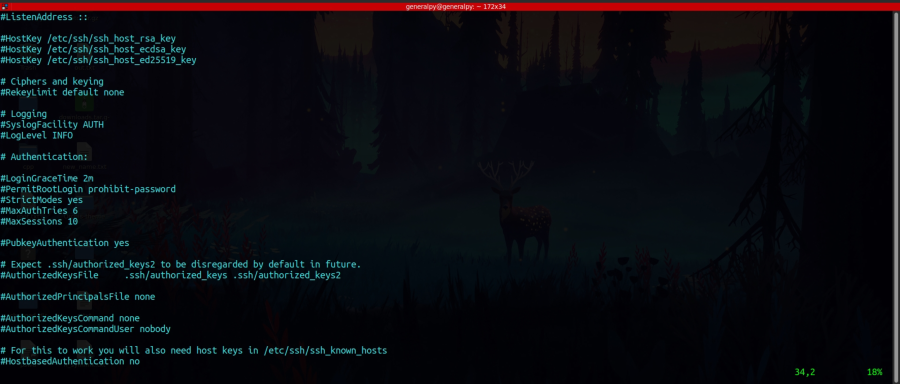
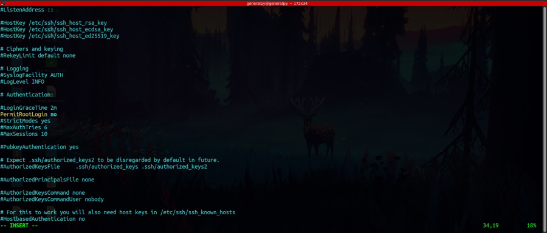
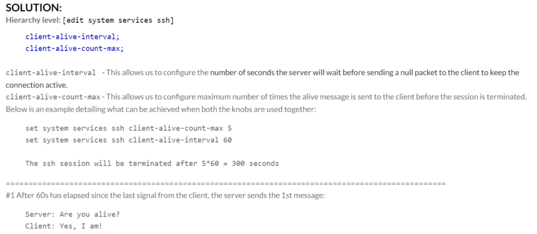

To make ssh server secure, we have to change its config file which is located in /etc/ssh by the name sshd_config(ssh_config is for client).

Server must be restarted after each change to the config file.

Lines starting with # are comments, options are case insensitive and space separated attributes must be enclosed in quotes. Also default values must be set and commented, so when we want to change values we can uncomment the values and set our own options. Note that all values are not listed here. We can check what an option does, we can visit manpage of sshd_config.
First thing to change is port number to an uncommon port. Tho this doesn't provides complete security as when hackers target a organization, they will check all ports. Also change firewall rules if present.
Second thing to change is direct root login. ssh provides functionality of direct root login thru password, which can cause problems as password can sometimes be bruteforced hence leaving a security loop hole in the system. If we need root login, login as simple user and then switch to root user.
PermitRootLogin is the option for direct root login.

By default permit root login is disabled and its default value in commented form is prohibit-password which means don't allow passwords, use other methods like public key login but its is recommended to turn it off completely.

We can choose to completely remove password auth and use other methods like public key auth. It will be shown further in the notes.
Another thing we can do is allow only some users to login. Not all users are admin so they have no business in the server so we can allow only admins to login. AllowUsers option followed by a space spearated list of users can be used to allow only some users.
We can also configure firewall to only allow ssh connection from some specific ips or networks.
We can also edit idle timeout interval that is log out idle user after set time. ClientAliveInterval is used for that. ClientAliveCountMax will determine how many packets are to be sent to check if client is alive.

client alive count max = 0 means that after client alive interval if client is idle, log out the client